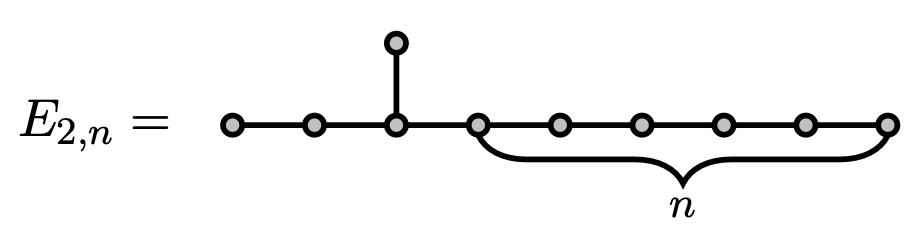
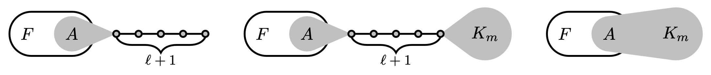

Part I
Eigenvalues
Adjacency matrix and smallest eigenvalue
| $G$ | $\lambda_1(G)$ |
| $K_n$ | $-1$ |
| $K_{1,n}$ | $-\sqrt{n}$ |
| $P_n$ | $-2\cos\frac{\pi}{n+1}$ |
$\lim_n \lambda_1(P_n) = -2$
Limit of the smallest eigenvalue? $-\lambda^*$
$\lambda^* = \sqrt{\beta}+1/\sqrt{\beta} = $ 2.019800887...
where $\beta$ is real root of $x^3 = x + 1$.
Characterization of graphs with bounded eigenvalues
$\mathcal{G}(\lambda) = \{$ graphs with smallest eigenvalue $\ge -\lambda \}$
Cauchy interlacing theorem
$\mathcal{G}(\lambda)$ is closed under taking subgraphs
* all subgraphs are induced
Part II
Forbidden subgraphs
$\mathcal{G}(\lambda) = \{$ graphs with smallest eigenvalue $\ge -\lambda \}$
$\mathcal{G}(\lambda)$ is closed under taking subgraphs
Planar graphs are closed under taking minors
Wagner's theorem: no $K_5$ or $K_{3,3}$ minors
$\mathcal{G}(\lambda) = \{$ graphs with smallest eigenvalue $\ge -\lambda \}$
$\mathcal{G}(\lambda)$ is closed under taking subgraphs
Question: Define $\mathcal{G}(\lambda)$ by forbidden subgraphs?
$\mathcal{G}(\lambda) = \{$ graphs with smallest eigenvalue $\ge -\lambda \}$
Question: Define $\mathcal{G}(\lambda)$ by forbidden subgraphs?
Simple case $\lambda < 1$
$\lambda_1(K_2) = -1$ hence $K_2 \not\in \mathcal{G}(\lambda)$
$\mathcal{G}(\lambda) = \{$ graphs with no edges $\}$
Tautology: Forbid all graphs outside $\mathcal{G}(\lambda)$
$\mathcal{G}(\lambda) = \{$ graphs with smallest eigenvalue $\ge -\lambda \}$
Question [Bussemaker and Neumaier 1992]
Can $\mathcal{G}(\lambda)$ be defined by finite forbidden subgraphs?
$\mathcal{G}(2)$ is complex; it contains all the line graphs
Cameron, Goethals, Seidel, and Shult: For every connected graph, it is in $\mathcal{G}(2)$ if and only if it is a "generalized line graph" or an "exceptional graph"
Kumar, Rao and Singhi: $\mathcal{G}(2)$ can be defined by forbidden subgraphs with $\le 10$ vertices
$\mathcal{G}(\lambda) = \{$ graphs with smallest eigenvalue $\ge -\lambda \}$
Question [Bussemaker and Neumaier 1992]
Can $\mathcal{G}(\lambda)$ be defined by finite forbidden subgraphs?
"however, these seem to be very difficult problems"

J. and Polyanskii 2022
Yes if and only if $\lambda < \lambda^* \approx 2.01980$
Generalization to signed graphs
$\mathcal{G}^\pm(\lambda) = \{$ signed graphs with smallest e.v. $\ge -\lambda\}$
Can $\mathcal{G}^\pm(\lambda)$ be defined by finite forbidden subgraphs?
J. and Polyanskii 2022 Yes if and only if $\lambda < \lambda^*$
Motivation [Tidor, Yao, Zhang and Zhao 2022] Application to spherical two distance sets
Application. For every $λ < λ^*$, there exists $n_0$ s.t.
for every symmetric integer matrix$$A = \begin{bmatrix}0 & * & \dots & * \\ * & 0 & \dots & * \\ \vdots & \vdots & \ddots & \vdots \\ * & * & \cdots & 0 \end{bmatrix}$$if $\lambda_1(A_0) \ge -λ$ for every principal submatrix $A_0$ of order at most $n_0$, then $\lambda_1(A) \ge -λ$
Vijayakumar 1987: for $λ = 2$, $n_0 = 10$
Part III
Ramsey
$\mathcal{G}(\lambda) = \{$ graphs with smallest eigenvalue $\ge -\lambda \}$
$\mathcal{G}(\lambda)$ can be defined by finite forbidden subgraphs
if and only if $\lambda < \lambda^* \approx 2.01980$
Two cases
$\lambda < \lambda^*$ and $\lambda \ge \lambda^*$
Case: For $\lambda < \lambda^*$, $\mathcal{G}(\lambda)$ can be defined by finite forbidden subgraphs
Step 1: Forbid $K_{1,5}$ because $\lambda_1(K_{1,5}) = -\sqrt{5}$
Step 2 (Ramsey-type result): For every $\ell, m$ and $F$, for every sufficiently large $K_{1,5}$-free connected graph $G$, if $G$ contains $F$, then $G$ contains"Forbidding $(\ell, m)$-extensions of $F$ effectively forbids $F$ itself in sufficiently large connected graphs"
Subcase: $2 \le \lambda < \lambda^*$
Step 1: Forbid $K_{1,5}$
Step 2: Forbidding $(\ell, m)$-extensions of $F$ effectively forbids $F$ itself in sufficiently large connected graphs
Step 3: Find $\ell, m$ such that all $(\ell, m)$-extensions of $F$ are disjoint from $\mathcal{G}(\lambda)$, for every minimal forbidden subgraph $F$ for "generalized line graphs"

Subcase: $2 \le \lambda < \lambda^*$
Step 1: Forbid $K_{1,5}$
Step 2: Forbidding $(\ell, m)$-extensions of $F$ effectively forbids $F$ itself in sufficiently large connected graphs
Step 3: Find $\ell, m$ such that all $(\ell, m)$-extensions of $F$ are disjoint from $\mathcal{G}(\lambda)$, for every minimal forbidden subgraph $F$ for "generalized line graphs"
Step 4: Forbid all these extensions
Subcase: $\lambda < 2$
Computationally simpler, but conceptually complicated
...
Last step uses non-effective Ramsey-type result
Dickson's lemma
The poset $(\mathbb{N}^n, ≤)$ does not contain infinite antichains
Case: For $\lambda \ge \lambda^*$, $G(\lambda)$ cannot be defined by finite forbidden subgraphs
Observation: if $G(\lambda)$ can be defined by finite forbidden subgraphs, then $G(\lambda + \varepsilon) \setminus G(\lambda) = \varnothing$ for some $\varepsilon$
Suffices to construct graphs to densely fill $(-\infty, -\lambda^*)$
Open problems
Problem A: Effectivization
Problem B: Classify all the connected graphs with smallest eigenvalue in $(-λ^*,-2)$. In particular, classify those with sufficiently many vertices
Problem C: Same problem but for signed graphs
Recently, Wang, Dong, Hou and Li classified signed graphs with spectral radius in $(0, \sqrt{2 + \sqrt{5}})$
Problem D: Forbidden principle submatrices for $\{0,\pm 1\}$-valued symmetric matrices with eigenvalues bounded from below
Connection to Lehmer's Mahler measure problem
Problem E: Fix $-1 \le \beta < 0 \le \alpha < 1$, determine asymptotic behavior of maximum number of unit vectors in $\mathbb{R}^n$ with pairwise inner product $\alpha$ or $\beta$.
Solved when $\alpha + 2\beta < 0$ or $(1 - \alpha) / (\alpha - \beta)< \lambda^*$
Arizona State University
zilinj@asu.edu